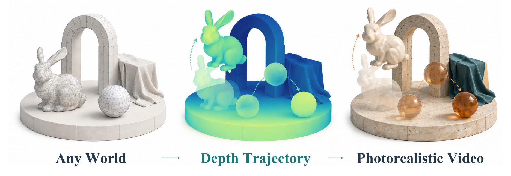
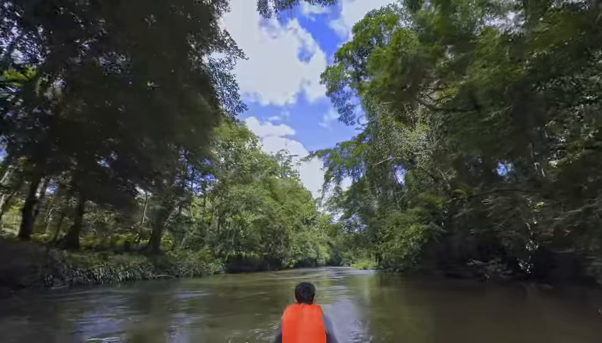
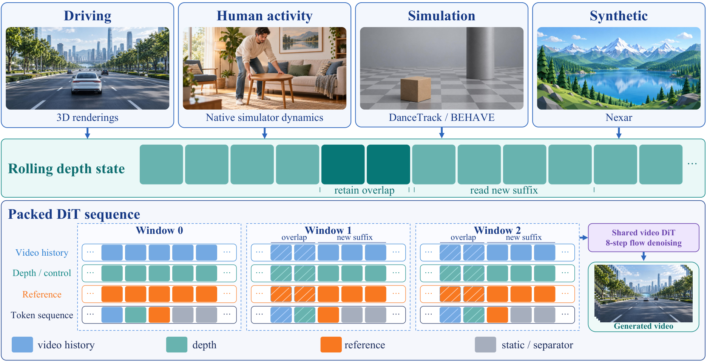
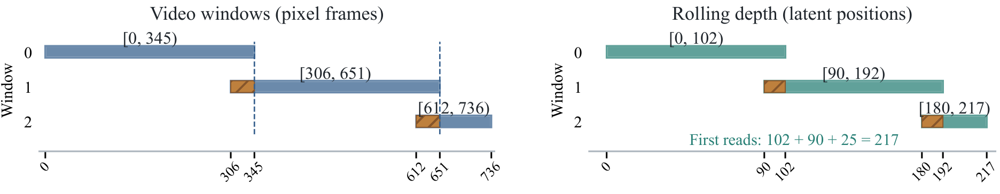
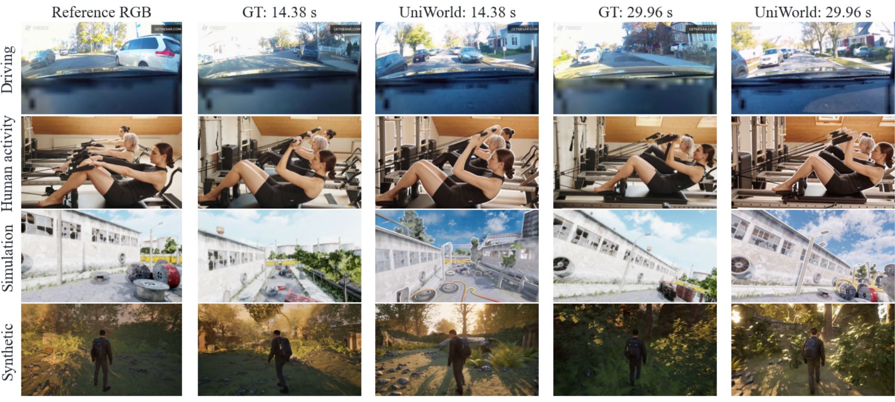
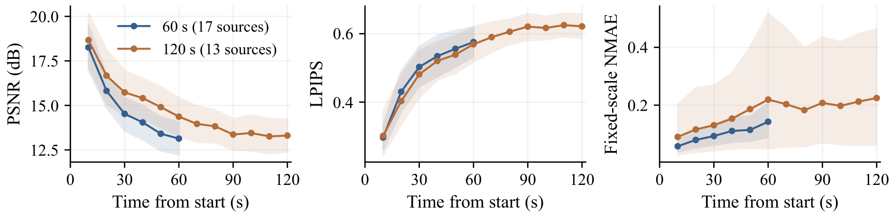

60 seconds · continuous
01 / Long-horizon generation
The Mediterranean coast.
Sunlit rooftops and a sweeping coastline, in one continuous trajectory.
One shared model. Many visual worlds.
A Unified World Model for
Real-Time Visual World Simulation
From evolving geometry to continuous visual worlds.
Depth sets the scene.
Reference sets the appearance.
Paper presentation
02 / Visual worlds
Selected scenes with clear structure, detailed environments, and continuous motion.
Hover to preview. Select a scene to watch the complete clip.
01 / The idea
A common visual interface for worlds that move.
UniWorld turns depth trajectories and a reference image into continuous video. Estimated depth, native depth, and on-demand simulator geometry all enter the same shared renderer.
Visual history and geometric history stay on one timeline, so each new window continues from what has already been generated.

Driving, human activity,
simulation, and synthetic scenes
Per sampling window
with the shared H3/VDN generator
Long-horizon continuation
evaluated in stress tests
Generated history and
rolling depth, kept in sync
03 / A shared interface
Depth describes layout, occlusion, and geometric change. The reference image provides visual appearance.
Drag the divider to inspect the aligned depth control and generated video at the same instant.

Persistent visual context
throughout the trajectory.
From a simulator, on demand
Warm and cool references share exactly the same depth. A geometric control branch changes the future while retaining the committed first window.
Shared first-window history / Branch depth changes from frame 357 (14.875 s). The camera revisits the scene at 20 s.
04 / Beyond a single window
Fixed-size windows extend a visual trajectory while preserving committed latent history. Rolling depth brings the corresponding geometric state forward.
Complete 60- and 120-second sequences. Original playback speed.
Sunlit rooftops and a sweeping coastline, in one continuous trajectory.
An unbroken two-minute journey through a city at dusk.
Follow the shoreline through another minute-long trajectory.
The paper evaluates 17 sixty-second validation/test sequences and 13 two-minute training-split stress tests. Latent history is preserved exactly; visual quality can still drift over long horizons.
05 / How it works
Driving, human activity, simulation, and synthetic scenes share one packed DiT sequence with rolling depth state.
Read the method
Aligned depth defines geometric evolution. Reference RGB and optional text supply global appearance context.
Generated history enters the next target prefix at the current flow noise level, and is restored at every sampling step.
Retain the depth overlap, read new positions incrementally, and append only newly generated video latents.

06 / In the paper
Quality, compute, and geometric state, evaluated separately. The tables below reproduce the reported manuscript values.
100 matched sources · 5 s and 14 s, equally weighted · scores ×100, higher is better
| Configuration | Quality score ↑ | Background consistency ↑ | Motion smoothness ↑ | Imaging quality ↑ |
|---|---|---|---|---|
| H3 50-step | 79.87 | 92.94 | 98.47 | 62.28 |
| LongVie2 | 78.54 | 92.86 | 97.83 | 58.64 |
| LongVie AR2 | 78.62 | 92.19 | 97.84 | 60.24 |
| H3/VDN DMD8 UniWorld generator | 80.54 | 93.10 | 98.68 | 63.51 |
Table 1 in the manuscript. The full table also reports subject consistency, temporal flickering, dynamic degree, and aesthetic quality. These results evaluate the within-window generator.
8 H100 GPUs per request · 8 evaluations per window · 12 hot requests per canvas
| Canvas | 30 s total DiT time | Full continuation DiT time | New frames / second ↑ | RTF ↓ |
|---|---|---|---|---|
| 960 × 544 | 52.774 s | 21.175 s | 14.472 | 1.661 |
| 672 × 384 | 37.594 s | 14.356 s | 21.361 | 1.126 |
Tables S16–S17 in the paper. Full-continuation windows reach the 14 FPS throughput target at both resolutions. Timing includes Union and multi-GPU communication; depth preparation, VAE decoding, and export are measured separately.
Canonical active depth rows · independent of total trajectory duration
960 × 544 canvas
672 × 384 canvas
Cached and incremental paths
for all three simulator conditions
| Output duration | Rolling source positions | Direct-slicing positions |
|---|---|---|
| 30 seconds | 217 | 241 |
| 60 seconds | 427 | 475 |
| 120 seconds | 852 | 960 |
The state bound covers active canonical depth rows. Transient copies, conditioning features, activations, model weights, and source storage are accounted for separately in the appendix.


Explore the work
A Unified World Model for
Real-Time Visual World Simulation
@misc{zhang2026uniworldunifiedworldmodel,
title={UniWorld: A Unified World Model for Real-Time Visual World Simulation},
author={Xin Zhang and Yabo Chen and Shuaiwei Wang and Zixuan Duan and Haibin Huang and Feng Xu and Xuelong Li},
year={2026},
eprint={2610.32381},
archivePrefix={arXiv},
primaryClass={cs.CV},
url={https://arxiv.org/abs/2610.32381},
}